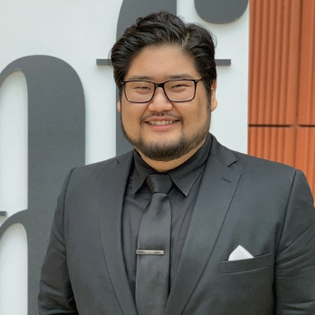

Academic Advising
Academic Advising Overview
Academic Advising is a process where students envision, execute, and reflect on their academic plans with guidance from a qualified UMSI Academic Advisor. Students share their goals, challenges, and questions with their academic advisor, and their academic advisor contributes knowledge of university and program requirements, policies, and processes. Together, we develop an academic plan that aligns with the student's personal and professional goals.
For information about how to schedule an appointment with your advisor visit the Connecting with an Advisor page. It may be helpful to review the How to Get the Most Out of Academic Advising page before your appointment.
Your Advisors
-
Edwin Oros
New Transfer Advising Intern
he/him/his
Hi everyone! My name is Edwin Oros. I am a First-Generation Mexican-American graduate student getting my M.A in Diversity & Social Justice in Higher Education. I now have my B.A in Sociology with minors in Anthropology and Chicana/o Studies from California State University, Dominguez Hills. Yes! I said California. I am from the Coachella Valley in California. I love raving, traveling, hanging out with friends, and sleeping.
-

Libby Jones
BSI Academic Advisor
she/her/hers
Libby Jones supports undergraduate students enrolled in the Bachelor of Science in Information (BSI) and the UMSI Minor programs. Libby uses an appreciative and coaching approach to their academic advising practice. Her passion for students and advising is grounded in her belief in lifelong learning and access to education.
Libby started her career in higher education as an Assistant Director of Transfer Student Admissions, at Central Michigan University before joining the OASA team here at UMSI in 2022. Before her career in higher education, she worked as a certified recreational therapist specializing in psychiatric service.
-
Bella Schilling
BSI Academic Advisor
she/her/hers
Bella Schilling supports undergraduate students in the Bachelor of Science in Information (BSI) and UMSI Minor programs, bringing a holistic and personalized approach to student success. Bella is passionate about fostering inclusive and supportive environments, emphasizing the importance of tailored guidance to help students thrive academically and personally.
Before joining the OASA team in Fall 2024, Bella served as the Program Manager for Gender Inclusive and Residential Experience with Michigan Housing at the University of Michigan. Her work in higher education is grounded in her commitment to equity, belonging, and empowering students.
-

Josh Lee
Associate Director of Academic Residential Program
he/him/his
Josh joined the UMSI team in August 2021. In his role, he serves as the lead staff member for the three residential degree programs (BSI, MSI, MHI), providing leadership and support for key functional areas including academic advising, student support, and degree program management.
Josh started his career in higher education at Purdue University, serving as Assistant Director for the Academic Success Center, then moving to the University of Michigan, working in career services at the LSA Opportunity before transitioning to the Center for Campus Involvement.
How can your Academic Advisor help you?
- Creating an individualized academic plan
- Interpreting an academic policy or procedure
- Discussing concerns about a particular course
- Connecting with student support resources and services
- Navigating a disruption to your BSI experience